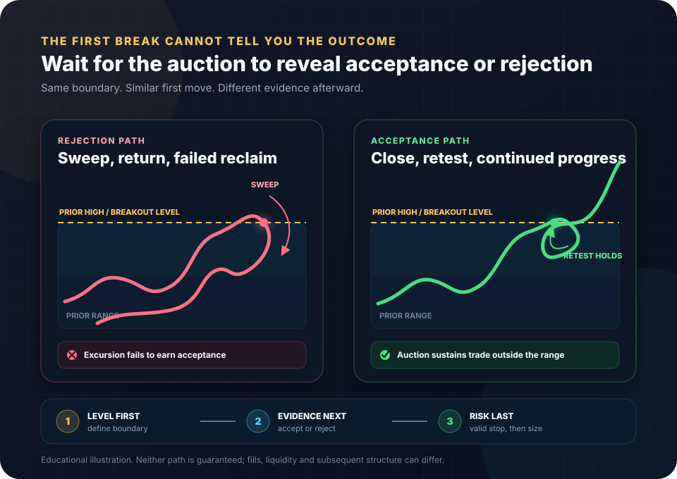

Futures execution and risk guide
How to Trade Around Whipsaws: Location, Confirmation and Risk
You cannot remove false breaks from an auction. You can stop treating the first move as proof. Define the level, identify the volatility and event regime, require the kind of acceptance or rejection your plan demands, place the real invalidation stop, and size from its dollar cost.

The governing rule
A Whipsaw Is a Path, Not a Predictable Shape
A breakout that succeeds and one that fails can look identical at the first tick through a level. The distinction appears later: price either attracts enough participation to hold outside the prior auction, or it is rejected and returns.
The objective is not to predict every reversal. It is to define what evidence your plan requires before entry, what price would invalidate the idea, and whether that distance fits the account. Confirmation reduces some uncertainty; it never removes risk.
Precise definitions
Six Terms That Keep the Diagnosis Honest
These concepts overlap, but they are not interchangeable. Name the observed behavior instead of applying “whipsaw” to every losing trade.
Move, reversal, invalidation
Price moves far enough in one direction to invite or trigger participation, then reverses enough to invalidate that directional attempt.
Excursion without acceptance
Price trades beyond a defined boundary but cannot sustain the auction outside it and returns into the prior range or value area.
Trade through a visible reference
Price crosses a prior high, low, or clustered trigger area. A sweep describes the path; it does not prove manipulation or the identity of participants.
Trade sustains beyond the level
Evidence can include closes, time, volume, follow-through, and a retest that holds outside the prior auction.
Price cannot remain outside
The excursion returns through the boundary, often followed by a failed reclaim and renewed trade inside the prior range.
Repeated two-way rotation
Price crosses the same references without directional progress. A whipsaw can occur inside chop, but not every rotation is a breakout failure.
For the order-book and stop-cascade mechanics behind many failed breaks, read Whipsaws in Futures: Liquidity, Stops and Algorithmic Repricing.
Risk begins with environment
Conditions That Make Directional Proof Harder
None of these guarantees a reversal. They change the burden of proof and the cost of being wrong.
Middle of a balanced range
There is little asymmetry, nearby references exist on both sides, and the same price can be crossed repeatedly. A directional signal here has more room to be noise.
Compression at an obvious boundary
Repeated tests can consume displayed liquidity, attract stop entries, and concentrate protective stops. The first break may expand cleanly or snap back.
Scheduled macro release
Consensus error, revisions, statement details, and cross-asset repricing can reverse the first reaction. Fill quality and spread behavior can change at the same time.
Session transition or thin participation
A move through a level with limited participation can be easier to reverse when a larger session opens or liquidity returns.
Range shock
A current bar far larger than the trader's tested baseline increases stop distance, slippage exposure, and the chance that a late entry is structurally misplaced.
Repeated benchmark crossings
Price rotating through VWAP, an opening price, or the same high-volume area without displacement is evidence of two-way trade, not trend confirmation.
From level to executable plan
The Whipsaw-Aware Execution Playbook
Every step can result in no trade. That is a valid output, not a failure to participate.
- 01
Map the level before price arrives
Define the boundary, why it matters, and what lies beyond it. Prior session extremes, value boundaries, opening ranges, and event anchors are hypotheses, not automatic entries.
- 02
Name the market regime
Compare current range and participation with a tested baseline from the same product and session segment. Check scheduled catalysts and session transitions.
- 03
Choose the evidence required
A first-touch strategy, close-beyond strategy, and retest strategy accept different risks. Do not enter on the first break and later claim the plan required a retest.
- 04
Distinguish acceptance from rejection
Acceptance can show through continued trade outside, a close that holds, and a successful retest. Rejection can show through a sweep, return inside, failed reclaim, and progress away from the boundary.
- 05
Define structural invalidation
Place the stop where the chosen thesis is wrong. A reclaim trade and a breakout-hold trade usually have different invalidation levels even if the entries are nearby.
- 06
Convert the stop into dollars
Planned loss per contract equals stop distance in ticks times tick value plus estimated commissions and slippage. Reduce contracts or skip when the result exceeds the budget.
- 07
Choose the order type deliberately
Market, limit, stop, and stop-limit orders trade fill certainty against price control in different ways. Know the broker and exchange implementation before the event.
- 08
Limit re-entry logic
Define whether one failed attempt ends the idea or whether a new structure can create a second, independent setup. Immediate revenge re-entry is not confirmation.
Evidence, not certainty
What Acceptance and Rejection Look Like
No single candle owns the definition. Use a combination that is explicit enough to review later.
The auction builds outside the old boundary
- Price closes beyond the level and continues to trade there.
- Pullbacks cannot regain the old range for long.
- A retest holds with less opposing progress.
- Volume and range expand without immediate full retracement.
- The invalidation level remains structurally clear.
The excursion cannot sustain trade outside
- Price sweeps the reference and closes back inside.
- A reclaim attempt fails at or just beyond the boundary.
- Opposite-side progress expands back through the range.
- Aggressive order flow produces little progress at the extreme.
- The failure point supplies a defined invalidation level.
Footprints can help judge aggressive effort versus price result at the level. Use the companion 6E order-flow guide for the distinction between executed bid/ask volume, delta, absorption, and resting liquidity.
Interactive planning tool
Whipsaw Plan and Position-Size Lab
Use your own tested volatility band and real risk budget. The lab checks whether the plan is internally complete; it does not predict the next move or recommend a trade.
Does the setup pass your own filters?
- Current / typical range
- 1.25×
- Your accepted band
- 0.70×–1.80×
- Estimated loss per contract
- $117.50
- Maximum whole contracts
- 1
The selected location, evidence, event state, volatility band, and dollar-risk test are internally consistent. This is not a forecast or entry signal.
- Location is defined at a preselected boundary.
- A retest or reclaim/failure is complete.
- The current range is inside the user-entered band.
Execution mechanics
Order Choice Changes the Failure Mode
No order type makes a whipsaw harmless. Each exchanges one form of uncertainty for another.
Higher fill priority, uncertain price
The order seeks available liquidity. In fast or thin conditions, the average fill can differ from the decision price and displayed quote.
Price control, uncertain fill
A limit protects the worst eligible price but can miss the trade, fill only partially, or provide a fill precisely because price is moving through the level.
Trigger first, execution second
The stop activates only after its trigger condition. The post-trigger order and price protection depend on the exchange and broker implementation.
Exit-price boundary, non-fill risk
After activation it becomes a limit order. A fast move can leave it working without an execution while the market continues away.
Worked scenarios
Four Whipsaw Decisions With Different Correct Outputs
These are hypothetical planning examples, not recommendations. The point is to show how evidence and risk change the decision.
| Scenario | Evidence | Risk test | Plan output |
|---|---|---|---|
| Sweep and rejection at prior high | Trades above, closes back inside, failed reclaim, then lower high | Stop belongs beyond the failed reclaim; calculated dollar loss fits one contract | Eligible for the trader's rejection plan, if all other rules pass. The sweep alone was not the entry. |
| Breakout holds after retest | Close above range, controlled retest, renewed progress outside | Stop below the retest is wider than a stop at the breakout tick, so contract count falls | Acceptance evidence is present. Size is determined from the structural stop, not from desired exposure. |
| First seconds after CPI | Large two-way bars cross the level repeatedly while the release is active | Fill and stop distance are unstable; planned slippage cannot be estimated confidently | Wait under the example plan. Resume only when the trader's tested event rule and structure permit it. |
| One 6E contract does not fit | Rejection is clear, but valid stop is 24 ticks away | 24 × $6.25 + $5 costs = $155 estimated loss; budget is $120 | Skip this trade. Moving the stop closer would change the thesis; keeping it would exceed the budget. |
For the full sizing framework—including cash equity, prop-account breach floors, safety reserves, and real drawdown room—use Risk Per Trade for Small Futures Accounts.
Common failure modes
Whipsaw “Fixes” That Quietly Increase Risk
More confirmation lines can restate the same price history without improving location, invalidation, or execution.
A time rule can be part of a tested plan, but it is not universally safe across releases or products.
That may be a valid first-break strategy only if its failure rate, stop, sizing, and event filters were defined in advance.
If any later candle qualifies, confirmation becomes hindsight instead of a reproducible rule.
A wider structural stop raises loss per contract. Contract count must be recalculated.
Desired size cannot determine invalidation. If the real stop does not fit, skip.
Price protection creates non-fill risk after activation. Understand the implementation before relying on it.
A second trade needs new structure and a fresh risk decision, not frustration with the first stop.
Final decision checklist
Before Trading a Break, Sweep or Reclaim
A “no” or “unknown” can be the reason to wait or skip.
Location: The boundary was defined before price crossed it.
Regime: Current range, liquidity, session, and scheduled-event state fit the tested plan.
Evidence: Acceptance or rejection is defined in observable terms and is currently present.
Order: Trigger, price protection, fill uncertainty, and non-fill risk are understood.
Stop: The exit is where the thesis is wrong, not where the desired contract count fits.
Risk: Stop distance, tick value, costs, and whole-contract count fit the available dollar budget.
Re-entry: The maximum attempts and conditions for a new setup were decided in advance.
Frequently asked questions
Futures Whipsaw Questions
What is a whipsaw in futures trading?
A whipsaw is a rapid directional move that reverses enough to invalidate or stop out a position, often around a range boundary, breakout level, scheduled event, or thin-liquidity period. The label describes the path after the fact; it is not a standalone setup.
How can a trader distinguish a breakout from a false breakout?
No single test can guarantee the distinction. Useful evidence includes a close beyond the level, time and volume accepted outside the prior range, a retest that holds, and continued progress. Rejection evidence includes a sweep, close back inside, and a failed attempt to reclaim the level.
Should a trader always wait a fixed number of minutes after economic news?
No universal waiting period fits every product, release, and market regime. Check the official event time, define a tested blackout rule in advance, and require stable structure and executable risk before entering.
Should stops be widened to survive whipsaws?
A stop should be placed where the trade idea is technically invalid. If that location is farther away, the dollar loss per contract increases, so contract count must fall. Widening a stop without reducing size simply increases planned risk.
Does a stop order guarantee the intended exit price?
No. Stop and stop-limit behavior depends on the order type, broker, exchange rules, liquidity, and market conditions. A stop-limit can remain unfilled after activation, while other stop implementations can fill away from the trigger within applicable protections.
When should a whipsaw trade be skipped?
Skip when the location is undefined, event risk is not controlled, price has not supplied the confirmation required by the plan, the stop location is arbitrary, or even one contract exceeds the available dollar-risk budget after costs.
Sources and methodology
Official and Primary Sources
- CME Group: Futures Order Types for market, limit, stop-limit, and stop-with-protection mechanics.
- CME Group: What happens when you submit an order? for exchange price controls and order validation context.
- U.S. Bureau of Labor Statistics: CPI release schedule, Federal Reserve: FOMC calendar, and European Central Bank: Governing Council calendar for official event timing.
- CME Group: Euro FX futures contract specifications for the $6.25 standard 6E outright tick used in the worked skip example.
- National Futures Association: Investor Best Practices for leverage and risk-capital disclosure.
Official calendars and exchange pages were checked August 5, 2026. Worked scenarios and calculator defaults are illustrative. The lab uses user-entered thresholds and transparent arithmetic; it applies no predictive model.